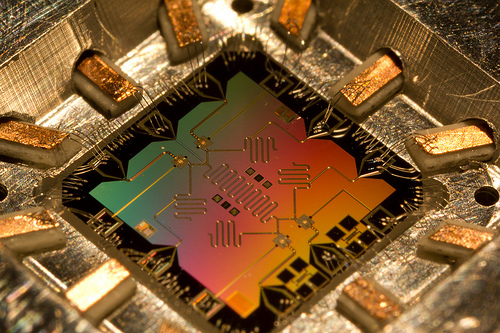
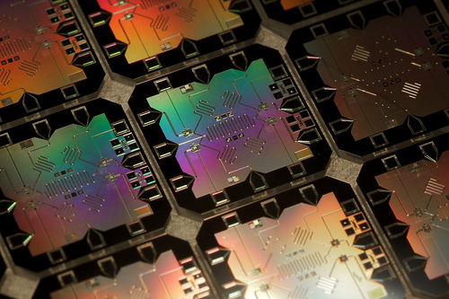
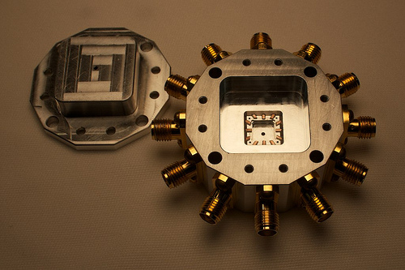
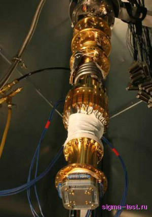

Еще одной важной областью квантовой криптографии является создание квантовых компьютеров, с помощью которых можно решить многие недоступные сегодня задачи и взломать ряд алгоритмов шифрования (в основном асимметричных). Квантовый компьютер − это вычислительное устройство, работающее по принципам квантовой механики, которую по праву можно назвать самым сложным разделом физики. Квантовая механика зародилась в начале ХХ века, и изучает поведение квантовых систем и ее элементов.
Классический компьютер работает на основе транзисторов и кремниевых чипов, которые используют для обработки информации бинарный код, состоящий из нулей и единиц. Бит, как минимальная единица информации имеет два базовых состояния: 1 и 0. Изменения этих состояний можно легко контролировать: объекты могут либо находиться в конкретном месте, либо − не находится. Именно поэтому многие физические объекты внешнего мира можно перенести в виртуальный с помощью сложных комбинаций битов. Работа же квантового компьютера будет основываться на принципе суперпозиции, а вместо битов будут использоваться кубиты (квантовые биты) (рис. 6.21), которые одновременно могут находиться во всевозможных состояниях (в 1 и 0 одновременно). По словам ученных, за счет этого квантовые компьютеры для определенных классов задач будут в миллионы раз мощнее нынешних. Сейчас уже описаны десятки всевозможных алгоритмов работы квантового компьютера, даже разрабатываются особые языки программирования.
 |
 |
Рис. 6.21. Квантовые биты или кубиты |
|
Ошибки в квантовых компьютерах можно разделить на два главных уровня. Ошибки первого уровня присущи всем компьютерам, в том числе и классическим. К таким ошибкам относится непроизвольная смена кубитов из-за внешнего шума (например, космических лучей или радиации). С этой проблемой недавно удалось справиться специалистам из компании Google. Для решения этой проблемы команда ученых во главе с Джулианом Келли создала особую квантовую схему из девяти кубитов, которые ищут ошибки в системе. Остальные кубиты отвечают за сохранность информации, таким образом, сохраняя ее дольше, нежели с использованием единичного кубита. Однако основная проблема никуда не делась, остается второй уровень ошибок. Кубиты изначально по своей природе нестабильны, они мгновенно забывают информацию, которую вы хотите сохранить на квантовый компьютер. Под воздействием на кубит окружающей среды нарушается связь внутри квантовой системы (процесс декогеренции). Чтобы избавиться от этого, квантовый процессор нужно максимально изолировать от воздействия внешних факторов. Как это сделать? — пока остается загадкой. По словам экспертов, 99% мощности такого компьютера уйдет на исправления ошибок, и лишь 1% хватит для решения любых задач. Конечно, от ошибок не удастся избавиться полностью, но если минимизировать их до определенного уровня, квантовый компьютер сможет работать.
Так для системы, представленной на рис. 6.22, кубиты охлаждаются для уменьшения шумов, в качестве охладителя используется жидкий гелий.
 |
 |
Рис. 6.22. Внешний вид одного из первых квантовых компьютеров |
|
В квантовом компьютере некоторые экспоненциальные задачи становятся полиномиальными.
Сегодня существует квантовый компьютер с 512 кубитами, созданный компанией D-Wave, но он пока вести речь о его практическом использовании преждевременно. По оценкам для взлома алгоритма RSA требуется универсальный квантовый компьютер с 1000 кубитами.